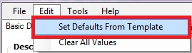

This feature allows users to open and edit the EPA Metadata Editor Microsoft Access database (metadata.mdb). The use of this feature requires that the user have Microsoft Access installed locally.

This feature is used to refresh the EME user interface defaults after edits have been made to the database. If the EME database is opened and edited from the EME user interface button, the 'Refresh From Database' option should be clicked to make sure that the defaults shown in the user interface reflect the newest edits to the database.

This feature allows a user to set all defaults for the selected tab. The editor will prompt the user to ensure that he/she would like to overwrite all information in the selected tab with default values as stored in the EPA Metadata Editor Microsoft Access database (metadata.mdb).

This feature will launch a spell-checking utility to verify the spelling of information within the current tab. If spelling errors are found within the selected tab, a new window will open and allow the user to modify the unknown word(s) if needed.

This feature checks the validity of the currently selected metadata record against the EPA Geospatial Metadata Technical Specification v1.0. Users can view errors associated with elements that are either missing or incorrectly documented using this button. The validation service will separate errors identified from the validation service (if any) that are specific to the FGDC CSDGM from those that are specific to the EPA implementation. Errors identified from using this feature should be corrected to ensure EPA compliancy.

Displays the metadata file in xml format using the default web browser.

Removes all ESRI-inserted (non FGDC) elements from the metadata record.

Performs a global search and replace on the entire metadata record.
Please Note: This affects information shown in the EME user interface only, and does not include information stored in the metadata record but not displayed in any tab of EME.

Users may also choose how to view validation results. When performing validation, a user may choose to view the results in the EME user interface or in a browser window, or both. The 'View in browser window' option will list the errors found during validation (if any) along with links to the specific lines where errors were reported. Users can click on the link and view the line/element that caused the error. In cases where a required element was missing, the parent element will be linked to so that users can understand which section was missing the required information. The 'View in User Interface' option will highlight errors in the user interface using a red balloon. Users can hover over the balloon to understand what the nature of the error was and then fix the error(s) accordingly (see below).